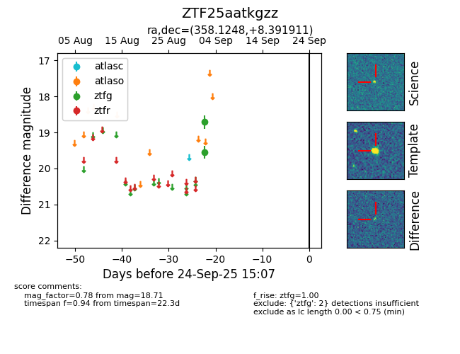

FINK: ZTF25aatkgzz
Lasair: ZTF25aatkgzz
ALeRCE: ZTF25aatkgzz
ZTF25aatkgzz (ztf,fink)
equatorial (ra, dec) = (358.1248,+8.39191)
galactic (l, b) = (98.9697,-51.71662)

last ztfg=18.71
2 ztfg detections